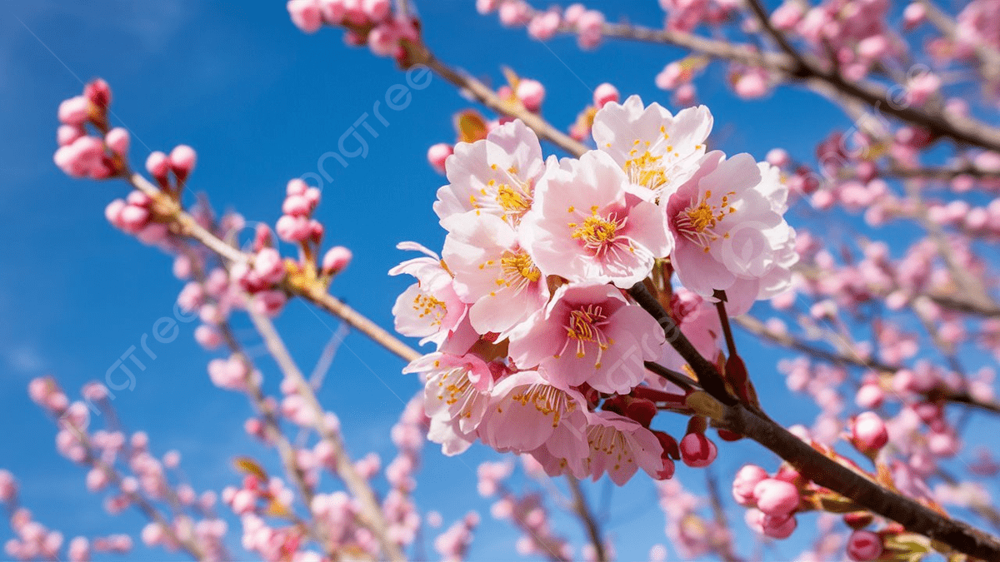

Bunga lili adalah bunga indah dengan kelopak besar berbentuk corong yang biasanya berwarna putih, merah, kuning, atau oranye.
Aromanya harum dan elegan, sering melambangkan kesucian, keanggunan, serta ketulusan hati.
Bunga lili adalah bunga indah dengan kelopak besar berbentuk corong yang biasanya berwarna putih, merah, kuning, atau oranye.
Aromanya harum dan elegan, sering melambangkan kesucian, keanggunan, serta ketulusan hati.

Bunga sakura adalah bunga khas Jepang yang mekar pada musim semi.
Kelopaknya berwarna putih hingga merah muda lembut, indah dan melambangkan keindahan, harapan, serta kefanaan hidup karena mekarnya hanya sebentar.
Sakura juga menjadi simbol persahabatan dan sering dirayakan dalam tradisi hanami, yaitu menikmati keindahan bunga bersama keluarga atau teman
Bunga lili adalah bunga indah dengan kelopak besar berbentuk corong yang biasanya berwarna putih, merah, kuning, atau oranye.
Aromanya harum dan elegan, sering melambangkan kesucian, keanggunan, serta ketulusan hati.